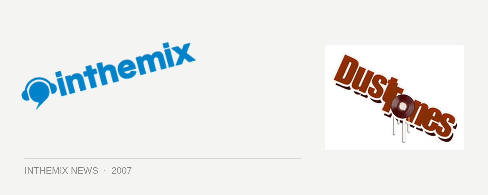

Kobrai Kai & Wild Marmalade rockin’ up for Dust Tones
Dust Tones will be delivering a dose of live drums, bass, percussion and organic dance music when it takes over the Factory Theatre on Friday 16th November, this time with Kobrai Kai and Wild Marmalade playing headline sets.
You’ll know Kobra Kai as the Triple J Unearthed who were also finalists in the 2006 Nokia Be Heard, as well as the recent winners of a set at Parklife. At Dust Tones they’ll be launching their 2nd EP and they’ll be bringing their blend of live hip hop and drum n’ bass. Wild Marmalade one the other hand are a dance music trio from Byron Bay, using all natural instruments to create totally live organic dance music. Bringing a mix of indigenous sounds and future grooves, it’ll be their second Sydney performance.
With support from Percussion Junction, Uber Linga DJs, Frequento and Bentley, get on down to the Factory Theatre on Friday 16th November.